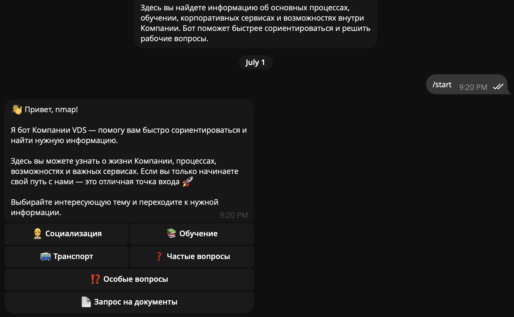
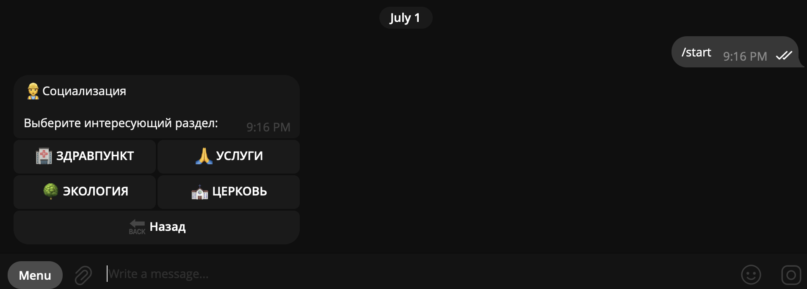
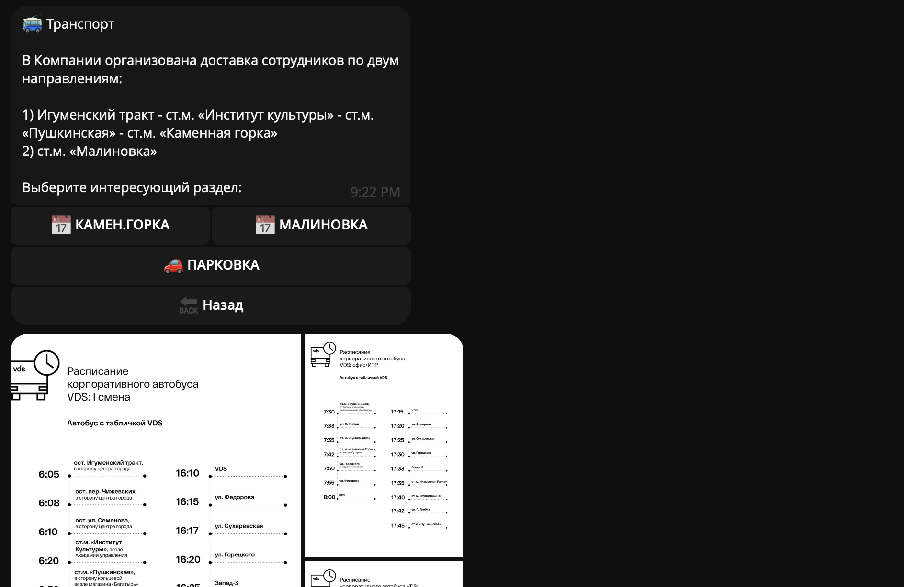
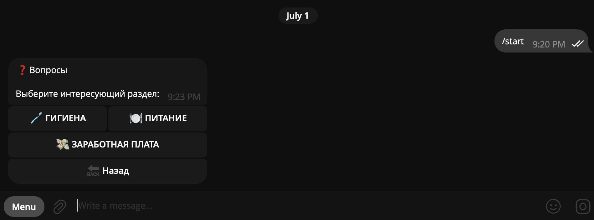
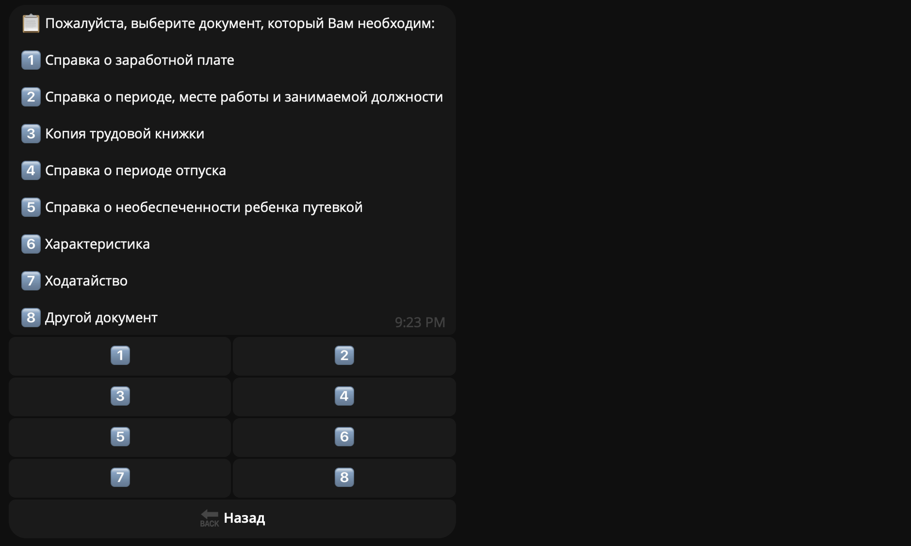
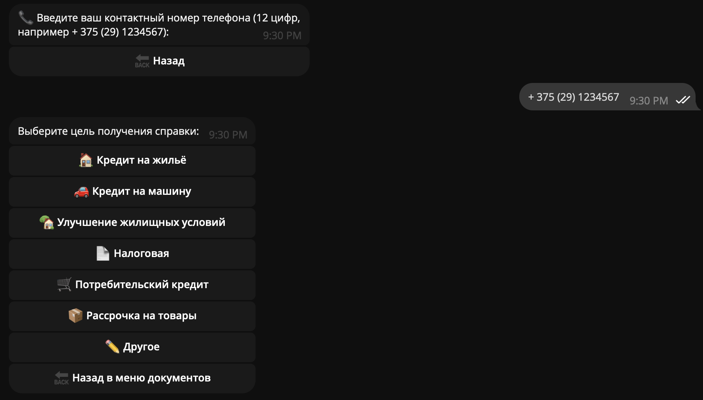

Upon launching the bot for the first time, new employees are greeted with a motivational quote and clear guidance on their next steps.

By selecting the 'Socialization' button, employees are presented with a list of available options. Clicking on any option provides a detailed description of that topic.

By selecting the 'Transport' button, employees are presented with options on how to commute to work. The bot outlines two ways: corporate transportation or personal car. The corporate shuttles run along two different routes covering opposite areas of Minsk. Additionally, the bot provides the schedule for both routes with timetables for each stop. For those driving personal vehicles, the bot provides instructions on parking near the office entrances.

By clicking on 'Usual Questions', employees can find answers to basic questions covered by most popular topics such as payroll and meals. If employees have a more specific question, they can ask it using the 'Unusual Questions' button. Then users enter their name and phone number, so the administrator can answer their questions as soon as possible.

The final option is 'Document Request', available not only to new employees but to the rest of the staff as well. The request can include payslips, employment records, or vacation balance statements. Within three business days, the documents are ready for pickup at the HR desk.

For example, selecting 'Payslips' requires entering employee's full name and phone number for validation purposes and a quick follow-up in case of any issues.